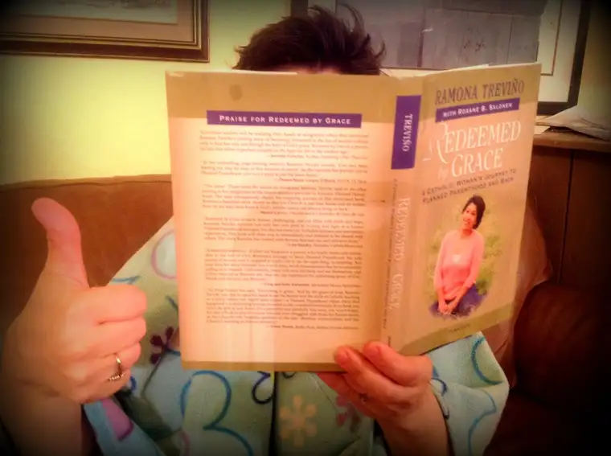
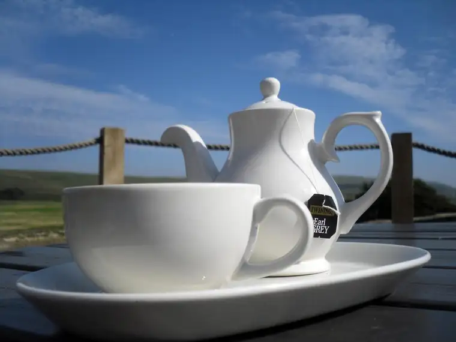
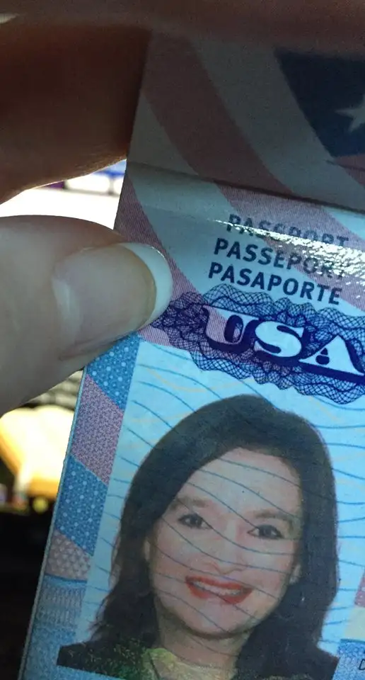

Meet Cathy!

Cathy is, first of all, very mysterious, as you can tell from this photo she took just after our book, “Redeemed by Grace: A Catholic Woman’s Journey to Planned Parenthood and Back,” came onto the scene about a year ago.
But I can tell you a little more about Cathy than what the picture shows. She’s a beautiful wife and mother of many, a sweet sister in the Lord, and someone who will send you a card just when you are needing it, or a teabag through the mail, since she lives too far away to sit down to sip something warm in person with you (well, with me at least).
That is, until now. The distance factor, my friends, is all about to change! Yes indeed, just a few hours after this posts, I’ll be on my way to Canada to meet up with, first, my dear friend and co-author, Ramona, and her dolly, Ramiah, in Minneapolis. And then from there we will become international travelers, destination Regina, Sask., home of sweet Cathy P.!
Regina also happens to be the place where my parents had their honeymoon, where I discovered ketchup-flavored potato chips during a visit there as a teenager, and where I watched “E.T.” (the movie) for the first time. So, I have some history with the area, but it’s been years. And I don’t know where Cathy was at the time.
I do now, and soon, the book cover will be removed and the real Cathy will be revealed!
(Maybe she uses the whole book-cover thing as a disguise, like Stephen King as he walks through the streets of cities where he might be otherwise recognized — it’s true, I once saw him and his book cover).
And for the first time since we met years ago as fellow CatholicMom.com writers, I will have a chance to meet Cathy in person, and maybe, if I’m lucky, even get to sip a spot of tea with her!

Cathy’s home will be our first destination — she’ll be our host during our visit. But we’re also heading to Canada for a broader purpose — to present together at two events in the area; a social-justice group in Weyburn, and a larger event in Regina for Regina Pro-Life.
Isn’t this poster announcing our visit fun? I couldn’t help but think of the old television sitcom, “The Love Boat.” (Cue the music: “Love, exciting and new, come aboard, we’re expecting you, the LOVE boat, soon will be making another run…”)
As you can probably tell, I’m just a LITTLE EXCITED about the chance to see Ramona and Ramiah again, to meet Cathy and her family for real for the first time, and not only that, but the guests who will come to the events to hear our testimonies.
Please pray with us that our visit will be fruitful, and our travels, safe.
I’ve got my passport secured, and my bags packed.http://www.ignatius.com/Products/RBG-H/redeemed-by-grace.aspx

Bon voyage!